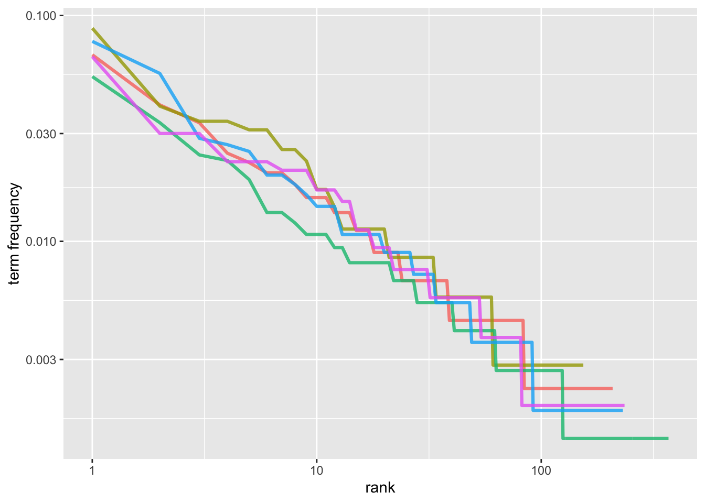
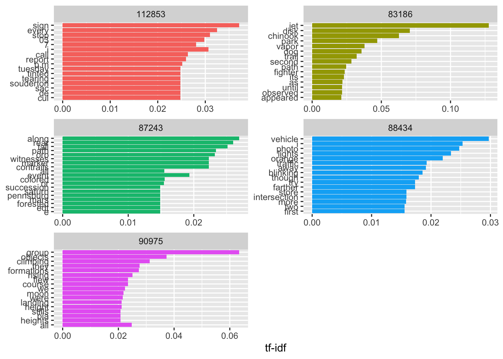

Bucks County UFO Text Analysis
Summary
Word Frequency tf-idf
# A tibble: 18,800 × 4
case word n total
<chr> <chr> <int> <int>
1 88434 the 43 560
2 87243 the 40 746
3 90975 the 35 533
4 83186 the 31 353
5 88434 i 31 560
6 112853 i 30 448
7 77847 the 29 341
8 81111 the 29 539
9 113287 the 26 363
10 83880 the 26 404
# ℹ 18,790 more rows# A tibble: 18,800 × 6
case word n total rank `term frequency`
<chr> <chr> <int> <int> <int> <dbl>
1 88434 the 43 560 1 0.0768
2 87243 the 40 746 1 0.0536
3 90975 the 35 533 1 0.0657
4 83186 the 31 353 1 0.0878
5 88434 i 31 560 2 0.0554
6 112853 i 30 448 1 0.0670
7 77847 the 29 341 1 0.0850
8 81111 the 29 539 1 0.0538
9 113287 the 26 363 1 0.0716
10 83880 the 26 404 1 0.0644
# ℹ 18,790 more rows
